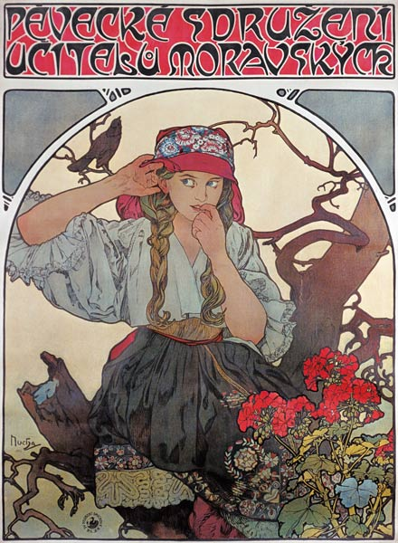
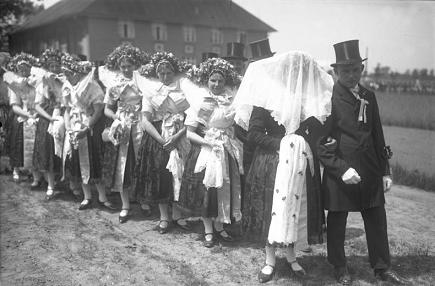
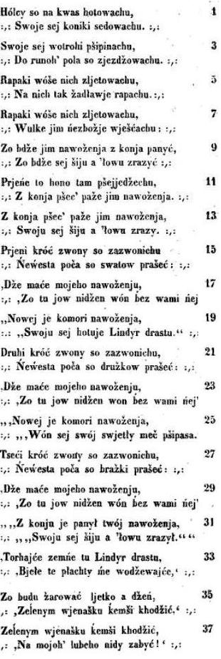
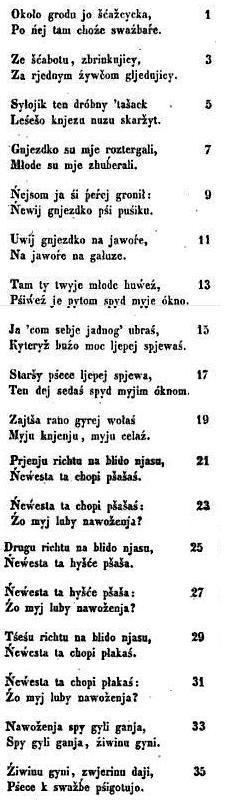

Po nedeli za svitáníChant 792, pp. 473-475, tiré du recueil
|
 |
Ponedeli to pondelíSong 716, pp. 475-476, from the collection
|
|
CESKI (TCHEQUE) Herman a Dornicka (Chant 1) 1. Ponedeli za svitání cesal Herman kone vraný. 2. Prila k nemu jeho matka, prinesla mu ctyry jabka. 3. Kam pojede, Herman mladý, e má kone osedlaný?" 4. Pojedu já pro svou milou, pro Dornicku roztomilou." 5. Nejed', Herman, nejed' pro ni, polém pro ni kone vrany." 6. To bych ani neudelal, abych sobe lidí nazval a k posledu doma zustal!" 7. Bodej Herman hlavu srazil, víc se domu nenavrátil!" 8. Jeli, jeli, prece jeli, na citeru, housle hráli, troubili a bubnovali. 9. A kdy na louku prijeli, na tu louku na irokou, pod tu lípu, pod vysokou: 10. Konícek zlámal noicku, Hermánek srazil hlavicku. 11. Dlouho stáli, rozmlouvali, a muziky porád hrály. 12. Dlouho stáli, nevedeli, jest-li by prec jeti meli. 13. Jedte vy jen prece pro ni, pro mé zlaté poteení. 14. Nebude-li mne samému, bude bratru nejmladímu." 15. Jeli, jeli, prece jeli, na citeru, housle hráli, troubili a bubnovali. 16. A kdy prijeli nahoru k Novosedlickému dvoru: 17. Jdi, Dornicko, jdi otvírat, tvoje svadebcany vítat." 18.Jak Dornicka otevrela, hned se celá polekala. 19. Vítám, páni svadebcani! kde jste enicha nechali?" 20. enich ten nám doma zustal, aby k svadbe stoly chystal." 21. U kolik jsem svadeb byla. a nikde jsem nevidela, 22. Aby enich doma zustal, svadebcanum stoly chystal! 23. Maticka jí brání jiti, a enicha budou míti. 24. Jen vy nám ji prece dejte a Dornicce nezbranujte." 25. Malicka ji vystrojila a z domu ji provodila. 26. Kdy ji z domu provázela, smutne sobe naríkala. 27. Jeli, jeli, zase jeli, na citeru, housle hráli, troubili a bubnovali. 28. A kdy na louku prijeli, na tu louku, na irokou, pod tu lípu, pod vysokou: 29. Dorna z vozu se nahnula, krev cervenou uhlídala. 30. To je krev mého Tnile'ho, ach, Hermánka rozmilého!" 31. Ach! to není krev clovecí, to je jenom krev zvírecí: 32. Zabil Herman tucnou laní, aby uctil svadebcany." 33. Jeli, jeli, porád jeli, na citeru, housle hráli, troubili a bubnovali. 34. A kdy prijeli nahoru do Hermanového dvoru: 35. Jdete, maticko, k vítání této netastné synové." 36. Vítám tebe, má synova! bodej jsi hlavu srazila, ne's mého syna poznala!" 37. Jdi ty, bratrícku, k vítání, této netastné vakrové." 38. Vítám tebe, má vakrová! bodej jsi hlavu srazila, ne's mého bratra poznala!" 39. Jdi ty, sestricko, k vítání této netastné vakrové." 40. Vítám tebe, má vakrová, bodej's v roce syna mela!" 41. Maticka jí za zlé mela, e jest ji tak privítala. 42. Co pak vy mne za zlé máte? vdyt pak vy me taky vdáte!" 43. A kdy byli v pul vecere, zvoní hranu na klátere. 44. Jak Dornicka uslyela, uleknutím zbledla celá. 45. Ach, komu to zvoní hranu? jiste mému to Hermanu !" 46. Herman, ten v komore leí, e ho jeho hlava bolí: 47. Umrelo jest pacholátko, malické to nemluvnátko." 48. Jak Dornicka uslyela, hned se pravdy domyslila. 49. Uleknutím na zem padla, v okamení dokonala. 50. Jak se verne milovali, tak je spolu pochovali. 51. Na hrob postavili kámen a vyryli nápis na ném : 52. Leí tu Herman s Dornickou, jako bratr se sestrickou. 53. Kdo okolo hrobu jdete, za ne se tu pomodlete!" Z Hrdecka |
CESKI (CZECH) Herman a nevesta (Chant 2) a. Ponedeli to pondelí mel Hermánek mít veselí. b. Kdy byli tam nad tou lukou, pod tou lípou pod irokou, c. Konícek zlámal noicku, Hermánek srazil hlavicku. d. Kdy byli lam na tom dvore u nevestiny matere, e. Vyla matka k uvítání : Vítám vás, páni a paní ! f. Vítám vás, páni a paní! kde jste enicha nechali ?'' g. enich ten nám doma zustal, aby pánum stoly chystal." h. Jak iva jsem neslyela, aby enich zustal doma !" i. Jen vy nám nevestu dejte a nás déle nezdrujte!" j. Tu hned jim nevestu dali, troubili a pekne hráli. k. A kdy byli nad tou lukou, pod tou lípou pod irokou, l. Nevesta s kocáru kouká : Cí pak krev se tu cervená?" m. Zabil Herman peknou lani, aby uctil svadebcany " n. A kdy byli tam na dvore u enichovy matere. Vyla matka k uvítání : o. Vítám vás, páni a paní, A vickni prátelé moji! : kde jste syna mi nechali? p. Ty nevesto netastná! ký byla ruku zlámala, E mého syna poznala!" q. Vyel otec k uvítání: Vítám vás, páni a paní, r. A vickni prátelé moji!: Kde jste syna mi nechali? s. Ty nevesto nevdecná ! Ký byla hlavu srazila, ne mého syna poznala!" t. Vyla vakrová k vítání: Vítám vás, páni a paní ! u. I vickni prátelé moji: kde jste bratra mi nechali? v. O ty nevesto! bud zdráva, aby sto let iva byla ! w. Já se taky mám vdávati : by mne meli tak vítati, rad bych mohla tak nechali!" x. Kdy pak první jídlo dali, ponejprv hrana zvonili. y. Prosím vás, páni a paní ! komu pak ty hrana zvoní?" z. Umrelo pánu panátko, malické to nemluvnátko." aa. A kdy druhé jídlo dali, podruhé hrana zvonili. bb. Prosím vás, páni a paní! komu pak ty hrana zvoní?" cc. Umrelo pastýri díte ráno dnes, hned na úsvite." dd. A kdy tretí jídlo dali, potretí hrana zvonili. ee. "Prosím vjís, páni a paní! komu pak ty hrana zvoní?" ff. Ale komu pak jinému neli Hermánkoví tvému !" gg. Dva noe za nadra vzala a na hrbitov pospíchala. hh. Jedním sobe hrob hrabala, druhý do sebe vrazila. ii. Kdo kolem hrbitova pujde, kadý nás litovat bude: jj. Tu hle leí milý s milou to pro lásku pro uprímnou." z Prachenska *************** Variantes: Celakowsky: gg. Dornicka se hned ulekla A brzo prawdu poznala W okamzenj dokonala... John Browning corrects it as: gg. Ona od stolu wyskocila Dwa noze w cepenj mela Geden si k srdci wrazila... |
FRANCAIS Hermann et Dorothée (Chant 1) 1. Ce lundi-là, fort matinal, Hermann peignait son noir cheval. 2. Avec quatre pommes pour lui, Sa mère accourut et s'enquit: 3. «Hermann, où veux-tu donc aller? Ton cheval est déjà sellé!" 4. «Je m'en vais voir ma bien-aimée, Ma douce et chère Dorothée." 5. "Non, n'y va pas! Pour la chercher, Envoie-lui ton cheval sellé!" 6. "Mais il serait fort discourtois De convier les gens chez soi Et s'abstenir de faire un pas!" 7. "Ah! qu'Hermann se rompe le cou Et ne revienne plus chez nous!" 8. Voici que le cortège avance - Viole et vielle jouent en cadence Avec trompettes et tambours- 9. Et que toute la compagnie, Traverse une vaste prairie, Avec des tilleuls tout autour. 10. Le cheval se casse la patte, Hermann tombe et sa tête éclate! 11. Longuement on a discuté Tandis que les sonneurs sonnaient: 12. Quel était le meilleur parti? Le reconduirait-on chez lui? 13. «Poursuivez! Allez donc chez elle! Là-bas mon bonheur vous appelle. 14. Si ce trésor n'est point à moi, Mon plus jeune frère l'aura." 15. Et l'on se remet en campagne, Au son des vielles qu'accompagnent Les trompettes et les tambours, 16. Et du sommet de la montagne | On voit Neusedlitz et ses tours. 17. «Ouvrez la porte, Dorothée, Car votre noce est arrivée!" 18. Dorothée, sans tarder, ouvrit Mais ce qu'elle vit la surprit. 19. "Bienvenue, Messieurs, à vous tous! Le marié n'est point avec vous?" 20. "Lorsque nous partions, il n'avait Pas fini de tout préparer." 21 "Des noces, j'en ai vu plus d'une. Mais je n'ai souvenance aucune. 22. Qu'un marié soit assez aimable De rester pour dresser les tables!" 23. La mère refusa d'ouvrir Tant qu'on ne l'aurait vu venir. 24. "Oh, la mère de la mariée, Il faut nous livrer Dorothée!" 25. Elle lui mit ses beaux atours. La laissa sortir dans la cour. 26. Lorsque l'on quitta la maison, La joie n'était plus de saison. 27. Le cortège reprit sa route, Avec violon et saquebute, Et la trompette et le tambour. 28. En parvenant à la prairie , Comme à l'aller, la compagnie Par le tilleul fit un détour. 29. Se penchant hors de la voiture, Dorothée remarqua le sang. 30. "Je connais ce sang, je le jure, C'est celui de mon cher Hermann! " 31. "Non, ce n'est point là du sang d'homme, C'est celui de quelque animal 32. Que votre Hermann aura tué comme Il sied pour un festin nuptial!" 33. Et le cortège va toujours: Vielle, violon, trompe, tambour, Se font entendre tour à tour. 34. Une côte! Encore un effort! Les voilà rendus à bon port: 35. «Mère, il faut accueillir ici L'épouse de votre cher fils!" . 36. "Soit, ton crâne que ne l'as tu Brisé, ma chère et tendre bru, Avant que mon fils l'ai connu! 37. « Toi, le frère, auras-tu le cur, De repousser ta pauvre sur?" 38. «Belle-sur, sois la bienvenue, Que n'as-tu ta tête perdue Avant de connaître mon frère!" 39. "Toi, sa sur, tu sauras j'espère, Réconforter la pauvre enfant!" 40. "Bienvenue, belle-sur si chère: Un fils te naîtra dans un an." 41. Et la mère était en courroux: On l'avait saluée, malgré tout. 42. "Mais que donc me reproche-t-on? Sommes-nous parents, oui ou non? " 43. Puis en plein milieu du banquet, Au clocher le glas a sonné. 44. Dès que Dorothée l'entendit, Comme un linceul elle a pâli. 45. "Pour qui donc sonne-t-on le glas? C'est pour mon Hermann, n'est-ce pas?" 46. "Hermann est couché sur son lit, C'est un mal de tête a-t-il dit. 47. Non, c'est pour la mort d'un enfant, Un nourrisson de moins d'un an." 48. Dorothée vient de deviner La terrifiante vérité. 49. Sur le sol on la vit tomber: Sa dernière heure avait sonné. 50. s'étant aimés fidèlement, Ils gisent ensemble à présent. 51. Sur la pierre de leur tombeau On a gravé ces quelques mots: 52. Ci-gisent, comme frère et sur, Hermann, Dorothée, un seul cur. 53. Toi passant qui viens en ces lieux, Tu voudras bien prier pour eux!" Coll. à Hrdecek - Trad.: Ch. Souchon (c) 2014 |
ENGLISH Hermann and his bride (Song 2) a. Early that Monday Hermann was rejoicing. b. When the wedding train passed over the mead Under the broad linden tree, c. His horse broke its leg. Hermann's head struck the ground. d. When the train entered the yard Of the bride's mother, e. Her mother came out to welcome them: "Welcome, ladies and gentlemen, f. Welcome, gentlemen and ladies! Where did you leave the bridegroom?" g. "At home we left the bridegroom Making the tables ready for the banquet." h. "Never in life did I hear Of a bridegroom staying at home!" i. "Now, give us the bride! We won't linger any longer." j. Now she gave them the bride And the trumpet played a nice song. k. But when they passed over the mead Under the broad linden tree, l. The bride looked out of her carriage: "With whose blood is the ground stained?" m. "'T was Hermann killed a nice doe To provide venison for his guests!" n. And when they were back in the yard At the groom's mother, His mother came out to welcome them. o. "Welcome, gentlemen and ladies! Welcome to you all, my friends! Where did you leave my son? p. You, ungrateful maiden?" Would that you had broken your arm Ere that you had met my son!" q. His father came out to welcome: "Welcome, gentlemen and ladies! r. Welcome to you all, my friends! Where did you leave my son? s. You, ungrateful maiden, Would that you had broken your head Ere that you had met my son!" t. Her sister-in-law came out to welcome: "Welcome, gentlemen and ladies! u. Welcome to you all, my friends! Where did you leave my brother? v. As for you, bride, well I greet you! May you live a hundred years! w. Were I some day to be wed I would be welcomed in that way, Or I'd rather be allowed to leave!" x. But when the first course was served, Lo! the bell was tolled for the first time! y. "Tell me, gentlemen and ladies, For whom is that bell tolling?" z. "Departed is, of a great lord, A little swaddled infant." aa. When the second course was served The bell tolled for the second time. bb. "Tell me, gentlemen and ladies, For whom is that bell tolling?" cc. "Departed is a shepherd's child, Early today at dawn. dd. And when the third course was served The death's bell was tolling again. ee. "Tell me, gentlemen and ladies, For whom now is that bell tolling? " ff. "But for whom could it be tolling, If not for that Hermann of yours?" gg. Two knives in her bodice she hid, And she hurried to the churchyard. hh. With one knife she dug her own grave. The other she plunged into her bosom. ii. If we pass through yonder churchyard All of us a prayer will say. jj. "Here rests a man with his dear one. Who died out of true love." Collected in Prachensek *************** Variantes: Celakowsky: gg. Now Dorothy was scared And quickly she guessed the truth The next moment she ran... John Browning corrects it as: gg. She sprang from the table She had two knives in her headdress Thrust one of them into her heart... |
|
Si les "tours" de Novosedlice (Neusedlitz), strophe 16 du chant 1, se rapportent bien une ville tchèque (Sudètes), la traduction allemande de Haupt et Schmaler parle de la "ferme de Neusedlin". |
 Noces chez les Wendes du Spreewald (avril 1931) |
If "the towers of Novosedlice" (Neusedlitz), stanza 16 of song 1, really hint at a Czech town (in the Sudeten Mountains), the German translation by Haupt and Schmaler has "the farm of Neudlin". |
|
WENDE ZRUDNY KWAS (Chant 3)  |
WENDISH PLAKAJUEN NEWESTA (Chant 4)  |
FRANCAIS TRISTES NOCES (Chant 3) 1. Les hommes se préparèrent pour la noce Et sellaient leurs petits chevaux. 3. Ils fixèrent leurs éperons Et prirent ensemble à travers champs. 5. Les corbeaux les escortaient Avec des coassements funestes. . 7. Les corbeaux les escortaient Et ils chantaient des chants impies: 9. "Le marié tombera de cheval. Il se brisera le cou et la tête!" 11. Ils venaient de traverser le premier champ Quand le marié tomba de cheval. 13. Le marié tomba de cheval Se brisa la nuque et la tête. 15. Les cloches sonnèrent une première fois La mariée demanda aux garçons d'honneur: 17. "Où avez vous caché mon mari? Je ne le vois nulle part parmi vous! 19. "Il est dans la chambre neuve: Il passe son costume en drap de Lund." [2] 21. Les cloches sonnèrent une seconde fois. La mariée demanda aux demoiselles d'honneur: 23. "Où avez vous caché mon mari? Je ne le vois nulle part parmi vous! 25. "Il est dans la chambre neuve: Il fixe à sa ceinture son éclatante épée. 27. Les cloches sonnèrent une troisième fois. La mariée demanda aux "truchements": [1] 29. "Où avez vous caché mon mari? Je ne le vois nulle part parmi vous! 31. "Ton mari est tombé de cheval Il s'est brisé la nuque et la tête." 33. "Dans ce cas ôtez-moi ce drap de Lund [2] Revêtez-moi d'habits blancs. 35. Que je porte le deuil un an et un jour [3] Et aille à l'église avec la couronne verte. [4] 37. Que j'y aille avec la couronne verte Et n'oublie jamais celui qui m'aima. Wot Jana Hornicha Kulowi. Chanté par Johann Hornich de Wittichenau |
ENGLISH THE BRIDE IN AFFLICTION (Song 4) 1. There's a path around the castle Walking on it wooing litigants, [1] 3. With blaring music and clinking noise, Are in search of pretty girls. 5. A nightingale a tiny bird Flies to the lord to bring in its claim. 7. "They have wrecked my nest They have robbed my fledglings." 9. "Did I not warn you Not to build your nest by the wayside? 11. Build the nest on the maple tree Upon the highest bow. 13. Take your fledglings thither Right under my window! 15. I'll choose for me only one That sings the most melodious song. 17. The eldest sings the best song Let it perch next to my window. 19. Early in the morning let it hail My lady and wake my staff of servants." *************************** 21. Now they serve the first course And the bride suddenly asks, 23. And the bride suddenly asks, Where her dear bridegroom tarries. 25. Then they serve the second course And the bride she asks again, 27. And the bride she asks again, Where her dear bridegroom tarries. 29. At last they serve the third course And the bride burst into tears. 31. And the bride burst into tears. "Where does my dear bridegroom tarry?" 33. "Your bridegroom roams among the wood He searches the wood for high game. 35. He hunts high game and strangles it, Preparing venison for the wedding. [5] (Wot Borkojskich zowcow Sung by Rothenburg girls) |
|
[1] "Brazki prasec" ou "swazbar" (all.:"Trauschmer"), intermédiaire qui fait les demandes en mariage (cf. breton Bazvalan. [2] "Lidyr drast" (all.:"Lündisches Kleid"): vêtement de luxe, mot à mot "tissu de Lund" en Hollande (ou de Linden près de Hanovre). [3] Comme indiqué dans l'ouvrage de Haupt et Schmaler (I, p.328), "On porte pendant un an et un jour le deuil des proches parents". [4] "Zeleni wjenask" (all.:"grüner Kranz"): peut-être à la fois symbole de mariage et de deuil. [5] La malédiction maternelle est aussi le thème du chant de Razen, "Macerne Zaklecje": une mère recommande à son fils d'épouser la servante courageuse, plutôt que la paresseuse fille de la maison. Le fils passe outre à cette recommandation. La mère demande à Dieu que sa bru ne franchisse jamais son seuil. Quand les jeunes mariés entrent dans l'écurie, les chevaux se cabrent, faisant jaillir l'épée du fourreau du marié. L'épée va se ficher dans le cur de la jeune épousée." [6] F-J. Child décrit ces chants slaves en relation avec le chant N°42 intitulé Clerk Colvill. Cette description est typique des procédés d'analyse de Child: "Il existe une ballade slave qui, comme la chanson si populaire chez les peuples romans, abrège le prologue du récit et se concentre sur le dévoilement progressif du décès du héros. Mais par d'autres aspects, elle coïncide avec la tradition scandinave. Tchèque A.a. Erben, p. 473, No 9, "Herman a Dornicka" = Alfred Waldau, "Böhmische Granaten", I, 73, No 100; (chez Friedrich Ehrlich, Prag 1858) A b. Celakowsky, I, 26 = Leopold Haupt & Johann Ernst Schmaler, I, 327 (Chants populaires des Wendes de Haute et Basse Lusace, Grimma 1841-3. 2 volumes. 4") . (Tchèque A b chez John Bowring, Anthologie tchèque, (Londres 1832) B. Erben,p. 475. C. Moravian. Susil, p. 82, No 89 a.' Nestastna svatba,' 'Les tristes noces.' D. Susil, p. 83, No 89 b. E. Slovak, Celakowsky, I, 80. Wende. A. Haupt et Schmaler, I, 31, No 3, ' Zrudny kwas,' ' les tristes noces' B. II, 131, No 182, ' Plakajuen newesta,' 'La mariée éplorée' (huit dernières strophes, les dix premières n'ayant pas de rapport avec le thème). ************** - Tchèque A: s'assure de ses intentions et le prie de ne pas rejoindre le cortège nuptial. De toute évidence, elle a un funeste pressentiment. Elle exhorte Hermann à n'inviter personne et à n'aller chercher aucun invité. Emportée par la passion, elle s'écrit: "Si tu y vas, puisses-tu te rompre le cou et ne jamais revenir!" (ce qui rappelle la ballade des Îles Féroé). - Tchèque C, D: c'est Hermann qui a un pressentiment, non sa mère. - Tchèque E: sa mère s'oppose à l'union et sa sur souhaite qu'il se casse le cou. - Wende A: il n'est question ni d'opposition ni de pressentiment avant son départ, mais ce sont les corbeaux escortant le jeune homme en route pour chercher la mariée qui dans leurs horribles coassements annoncent qu'il tomera de cheval et se brisera la nuque. - avec fanfare, tambours et violons, - ou, Tchèque D, tandis que l'on décharge cent mousquets et lorsqu'on passe sous un tilleul, la monture d'Hermann "se casse la patte" et son cavalier le cou. - Tchèque D: alors qu'on traverse un bouquet d'arbres dans une praire, les cent coups de feu sont tirés et Hermann est mortellement blessé. - Tchèque A: pendant le souper (ou lors de la collation de trois heures), on entend sonner le glas. Dorothée pâlit: Qui enterre-t-on? Hermann à coup sûr! On lui dit qu'Hermann a gardé la chambre en raison de maux de tête. Le glas, c'est pour un enfant. Mais elle devine la vérité et tombe inanimée. - Tchèque Aa: elle porte deux couteaux dans sa coiffe. Avec l'un d'eux elle se poignarde. - Tchèque Ab: les deux époux sont inhumé dans la même tombe. - Tchèque B: le glas retentit une première fois lorsqu'on apporte le premier plat, puis une seconde fois au second plat. On dit à la mariée que c'est pour un enfant mort. Ce n'est qu'au troisième plat qu'on lui avoue qu'il s'agit d'Hermann. Elle saisit deux couteaux, court au cimetière: avec le premier elle creuse sa propre tombe et avec l'autre elle s'immole. - Dans le fragment Wende B, au premier et au second plats (non ponctués par le glas), la mariée demande où est son fiancé. Elle réitère en pleurant sa question au troisième plat. On lui dit qu'il parcourt la forêt en quête de gibier pour la noce. - Dans la version Tchèque C, le glas retentit, tandis qu'on met la table. La mariée demande si c'est pour Hermann. On lui réponde que c'est pour un enfant. Quand on passe à table, on entend à nouveau le glas. Pour qui est-ce donc? Mais pour Hermann, bien sûr. Elle saute par la fenêtre et la même catastrophe que dans la version Tchèque B termine le récit. - Dans la version Tchèque D, la mariée entend la cloche quand le cortège approche de la maison et on lui dit que c'est pour un enfant. Elle va dans la cour et demande où est passé Hermann. "Il est à la cave en train de tirer du vin pour les invités". Elle repose la question lorsqu'on passe à table. Et la réponse est: "Il est dans sa chambre, couché dans son cercueil". Elle quitte aussitôt la table et se précipite dans la chambre, se saisit de deux couteaux d'or et s'en plonge un dans la poitrine. - Dans la version Tchèque E, lorsque la fiancée arrive chez Jean son promis et demande où il est, on lui dit qu'il vaudrait mieux qu'elle aille se coucher jusqu'à minuit. A un moment donné elle touche le cadavre de Jean, bondit hors du lit en hurlant "Bonne gens, pourquoi mettez-vous une vivante dans le lit d'un mort?" On se lève en disant: "Convient-il de lui donner une coiffe blanche ou une couronne de feuillage." Elle répond "je ne mérite pas la coiffe blanche (des veuves), mais la couronne de feuillage." - Dans la version Wende A, la première fois que le glas sonne, la mariée demande "Où est le marié?" et on lui répond "Dans la chambre neuve, il revêt son beau costume." La seconde fois, elle pose la même question. Et il lui est répondu qu'il met sa redingote, dans ladite chambre neuve. La troisième fois, on ne lui cache plus rien: il est tombé de cheval et s'est rompu le cou. "Alors, enlevez-moi ces beaux vêtements et habillez-moi de blanc. Je porterai ce deuil pendant un an et un jour. Puis j'irai à l'église parée de la couronne de feuillage pour ne plus jamais quitter celui qui m'a aimée." On se souvient que la mariée se suicide dans les versions Norvégiennes A, C, D et Suédoise E, tout comme dans les versions Tchèques Ab, B, C,et D." |
[1] "brazki prasec" (Germ.:"Trauschmer"), go-between in the wooing process (see Breton Bazvalan. [2] "Lidyr drast" (Germ.:"Lündische Kleid"): luxurious garment, literally "cloth from Lund" in Holland (or Linden near Hanover). [3] As stated in Haupt and Schmaler's book (I, p.328), "People used to be in mourning for near relatives during a year and a day". [4] "Zeleni wjenask" (Germ.:"grüner Kranz"), green wreath: maybe a token of simultaneous wedding and mourning. [5] Mother's curse also is the topic of a Razen song, "Macerne Zaklecje": a mother entreats her son to marry a hard working maid, rather than her lazy mistress. The son ignores her advice. Now the mother prays to God that her daughter-in-law never may pass her threshold alive. When bride and bridegroom enter the stable, the horses rear up, and cause the groom's wedding sword to spring out of the sheath and embed itself in the bride's bosom." [6] F-J. Child describes these Slavic songs in connection with the English song N°42 titled Clerk Colvill. This description is typical for his method of analysis: "There is a Slavic ballad, which, like the versions that are so popular with the Romance nations, abridges the first part of the story, and makes the interest turn upon the gradual discovery of the hero's death, but in other inspects agrees with northern tradition. Bohemian. A a. Erben, p. 473, No 9, Herman a Dornicka = Alfred Waldau, "Böhmische Granaten", I, 73, No 100; (published by Friedrich Ehrlich, Prag 1858) A b. Celakowsky, I, 26 = Leopold Haupt u. Johann Ernst Schmaler, I, 327 (Volkslieder der Wenden in der Ober- und Niederlausitz, Grimma 1841-3. 2 Bände. 4") . (Bohemian A b by John Bowring, Cheskian Anthology, (London 1832) B. Erben,p. 475. C. Moravian. Susil, p. 82, No 89 a.' Nestastna svatba,' ' The Doleful Wedding.' D. Susil, p. 83, No 89 b. E. Slovak, Celakowsky, I, 80. Wendish. A. Haupt and Schmaler, I, 31, No 3, ' Zrudny kwas,' ' The Doleful Wedding.' B. II, 131, No 182, ' Plakajuen newesta,' 'The Weeping Bride' (the last eight stanzas, the ten before being in no connection). ************** - Bohemian A, ascertaining his intention, begs him not to go himself with the bridal escort. Obviously she has a premonition of misfortune. Herman will never invite guests, and not go for them. The mother, in an access of passion, exclaims, "If you go, may you break your neck, and never come back! " (Here we are reminded of the Faeroe ballad). - Bohemian C, D make the forebodings to rise in Herman's mind, not in his mother's. - The mother opposes the match in Bohemian E, and the sister wishes that he may break his neck. - Wendish A has nothing of opposition or foreboding before the start, but the crows go winging about the young men who are going for the bride, and caw a horrible song, how the bridegroom shall fall from his horse and break his neck. - with a band of trumpets, drums, and stringed instruments, - or, Bohemian D, with a discharge of a hundred muskets, and when they come to a linden in a meadow Herman's horse " breaks his foot," and the rider his neck; - Bohemian D. when they come to a copse in a meadow the hundred pieces are again discharged, and Herman is mortally wounded. - In Bohemian A, while they are at supper (or at half-eve = three in the afternoon), a death-bell is heard. Dorothy turns pale. For whom are they tolling? Surely it is for Herman. They tell her that Herman is lying in his room with a bad headache, and that the bell is ringing for a child. But she guesses the truth, sinks down and dies, - Aa. She wears two knives in her hair, and thrusts one of them into her heart, - Ab. The two are buried in one grave. - In Bohemian B the bell sounds for the first time as the first course is brought on, and a second time when the second course comes. The bride is told in each case that the knell is for a child. Upon the third sounding, when the third course is brought in, they tell her that it is for Herman. She seizes two knives and runs to the graveyard: with one she digs herself a grave, and with the other stabs herself. - In the Wendish fragment B, at the first and second course (there is no bell) the bride asks where the bridegroom is, and at the third repeats the question with tears. She is told that he is ranging the woods, killing game for his wedding. - In Bohemian C the bell tolls while they are getting the table ready. The bride asks if it is for Herman and its told that it is for a child. When they sit down to table, the bells toll again. For whom should this be? For whom but Herman? She springs out of the window, and the catastrophe is the same as in Bohemian B. - In Bohemian D the bride hears the bell as the train approaches the house, and they say it is for a child. On entering the court, she asks where Herman is. He is in the cellar drawing whine for his guests. She asks again for Herman as the company sits down to table. And the answer is: "In the chamber lying in a coffin". She springs from the table and rushes to the chamber, seizing two golden knives, one of which she plunges into her heart. - In Bohemian E, when the bride arrives at John the bridegroom's house and asks where he is, they tell her she had better go to bed till midnight. The moment she touches John, she springs out of bed and cries: "Dear people, why have ye laid a living woman with a dead man?" They stand saying: "What shall we give her, a white cap or a green chaplet?" "I have not deserved the white (widow's) cap" she says; "I have deserved a green chaplet". - In Wendish A, when the bell first knolls, the bride asks "Where is the bridegroom?" and they answer "In the new chamber, putting on his fine clothes". A second toll evokes a second inquiry. And they say he is in the new room, putting on his coat. The third time they conceal nothing: He fell off his horse and broke his neck. "Then take off my fine clothes and dress me in white. I may mourn a year and a day and then go to church in a green chaplet and never leave him that loved me!" It will be remembered that the bride takes her own life in Norwegian A,C,D, and in Swedish E, as she does in Bohemian Ab, B, C, D." |